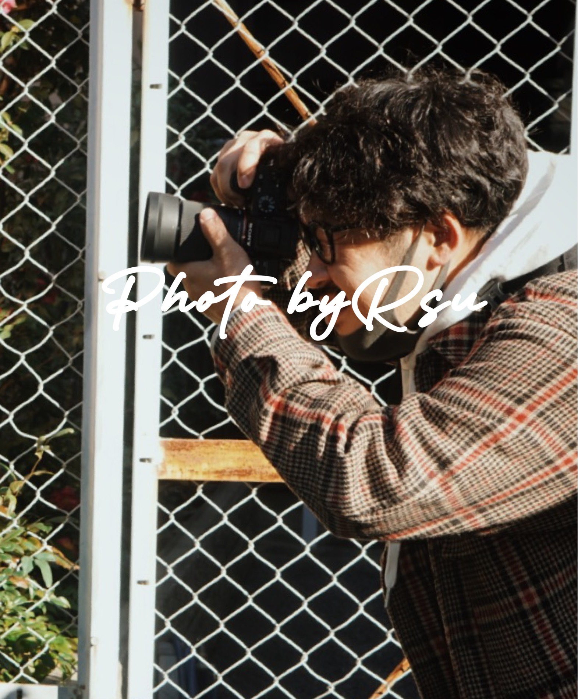

Rす from EHIME
普段当たり前に過ごしている生活をテーマにストリートスナップとして写真に収めています。 主に大阪で活動をしており仕事が休みの日にいろんなところに出かけ写真をとっています。 またyoutube活動も行なっており写真撮影の裏側やテーマをきめ動画を作り視聴者の心を掴むシネマティックな作品作りをしています。 またinstagramやtwitterなどのsnsもやっていて一日一枚写真を投稿したりyoutubeの動画が上がるとリンクを貼ってお知らせをしたりしています。
